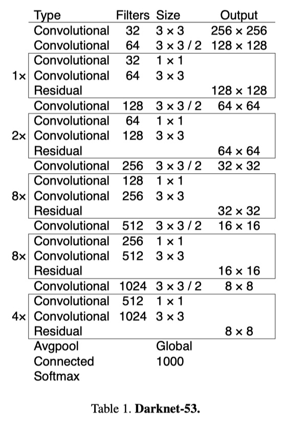
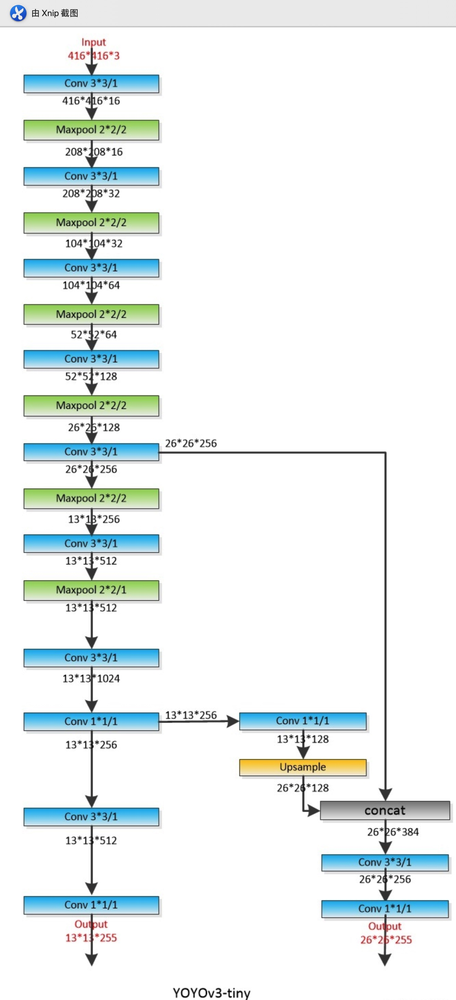

5.10 案例：KITTI 人、车物体检测
学习目标
- 目标
- 掌握YOLO结构的封装接口以及结构
- 掌握TFRecord文件的读取和存储
- 掌握KITTI数据集的TFRecord格式存储
- 应用
- 应用完成KITTI自动驾驶数据集的格式转换
5.10.1 KITTI 数据集介绍
KITTI数据集由德国卡尔斯鲁厄理工学院和丰田美国技术研究院联合创办，是目前国际上最大的自动驾驶场景下的计算机视觉算法评测数据集。该数据集用于评测立体图像(stereo)，光流(optical flow)，视觉测距(visual odometry)，3D物体检测(object detection)和3D跟踪(tracking)等计算机视觉技术在车载环境下的性能。KITTI包含市区、乡村和高速公路等场景采集的真实图像数据，每张图像中最多达15辆车和30个行人，还有各种程度的遮挡与截断。
地址：http://www.cvlibs.net/datasets/kitti/
1、kitti目标检测（object detection）2D数据集

2D数据集，是我们目前所接触的检测常用将物体使用平面框框起来的形式数据。数据和标签文件以及描述文件下载：

数据集内容介绍
TXT文件中包含着每个图片的标注信息，KITTI数据集为摄像机视野内的运动物体提供一个3D边框标注（使用激光雷达的坐标系）。该数据集的标注一共分为8个类别：’Car’, ’Van’, ’Truck’, ’Pedestrian’, ’Person (sit- ting)’, ’Cyclist’, ’Tram’ 和’Misc’或者'DontCare'。注意，'DontCare' 标签表示该区域没有被标注。
标注解释（value表示字符个数）,按照标注文件分割如下，下图是一张图片的label注释，可以看到有载货汽车，汽车，自行车：

- type(类型)：有'Car'-汽车, 'Van'-厢式货车, 'Truck'-载货卡车, 'Pedestrian'-行人, 'Person_sitting', 'Cyclist'-骑车人, 'Tram'-电车, 'Misc' or 'DontCare'这几种类型，其中'Misc'和'DontCare'表示可以忽略
- truncated(是否截断)：0-1之间的值，这张图片为0.00没有截断。(截断就是目标对象在采集图像的边缘被截断了，是不完整的）
- occluded(被遮挡程度)：0表示没有遮挡，1表示部分遮挡，2表示大面积遮挡，3表示不清楚。
- alpha(摄像机的偏转视角)：不做分析
- bbox(目标在图像中的位置坐标)：4个数字分别为599.41、156.40（左上）、629.75、189.25（右下）：
- xmin、ymin、xmax、ymax
- 注意YOLO需要的bounding box格式是(center_x, center_y, width, height)，后面的处理会说明
- dimensions+location/rotation_y(图像的三维坐标)：这里不做分析。
2、数据集下载
去官网下载之后的两个data_object_label_2.zip 5.6M和data_object_image_2.zip 12.57G文件。
解压之后如下：图片下面有训练和测试数据，而另一个training就是训练数据集的目标值存放文件里面为*.txt文件

5.10.2 YOLOV3源码实现分析
5.10.2.1 源码模型下载
1、官方自带开源
由论文作者，约瑟夫·切特·雷德蒙开源的称之为DarkNet，C语言中的开源神经网络，github地址：https://github.com/pjreddie/darknet。官方实现的特点是，思路就是原论文思路，测试精度和速度无太大差异，**但是也有一些缺点比如实现的语言不是我们所擅长的语言，实现的思路比较难懂。**
2、github高星实现版本
除了官方实现的，也会有一些其他机构或个人开源的熟悉的如TensorFlow、Pytorch的版本。这里我们后面做的案例就会使用。
- 最早实现的高星版本：keras-yolo3。
- TensorFlow实现的版本，相比官方版本，优点就是源码简单易读已复现，可能存在的缺点，速度性能上与C实现的版本会有一些差异。
实现不是从零开始，而是将别人的关键代码，复制进自己的项目。
复现步骤：1、熟悉算法思想 2、介绍相关应用 3、分模块进行实战练习
3、YOLO官网上提供了很多YOLO v3的预训练模型
地址：https://pjreddie.com/darknet/yolo/。大多时候思维是基于预训练模型训练自己需要的模型，比如预训练模型中其实包括了我们需要的大类，我们还需要再细分此类，那需要建立自己的训练数据集，并开展训练。不过当训练数据不理想或训练时间不充分时，二次训练模型在大类辨别基础上并不及预训练模型，这时可以直接试试预训练模型的效果。
5.10.2.2 YOLOV3-Tensorflow2.0源码分析
1、V3整体结构
YOLOv3引入了残差模块，并进一步加深了网络，改进后的网络有53个卷积层，命名为Darknet-53。YOLOv3借鉴了FPN的思想，从不同尺度提取特征。

YOLOV3的详细结构如下：

YOLOv3 的网络结构由基础特征提取网络、multi-scale特征融合层和输出层组成。
特征提取网络：YOLOv3使用DarkNet53作为特征提取网络：DarkNet53 基本采用了全卷积网络，用步长为2的卷积操作替代了池化层，同时添加了 Residual 单元，避免在网络层数过深时发生梯度弥散。
特征融合层：为了解决之前YOLO版本对小目标不敏感的问题，YOLOv3采用了3个不同尺度的特征图来进行目标检测，分别为13x13,26x26,52x52,用来检测大、中、小三种目标。特征融合层选取 DarkNet 产出的三种尺度特征图作为输入，借鉴了FPN(feature pyramid networks)的思想，通过一系列的卷积层和上采样对各尺度的特征图进行融合。
输出层：同样使用了全卷积结构，其中最后一个卷积层的卷积核个数是255：3x(20+4+1)=75表示一个grid cell包含3个bounding box，4表示框的4个坐标信息，1表示Confidence Score，20表示VOC数据集中80个类别的概率。如果换用别的数据集，20可以更改为实际类别数量。
2、源码主模型
YOLOV3的筑结构：
1、Darknet
2、3层YoloConv进行拼接然后卷积操作得到三层输出output_0，output_1，output_2（由深到浅）
- 3、如果是预测
- 三层输出直接通过yolo_boxes计算得到bbox, objectness, class_probs, pred_box
- 然后合并进行yolo_nms过滤输出预测结果
def YoloV3(size=None, channels=3, anchors=yolo_anchors,
masks=yolo_anchor_masks, classes=80, training=False):
x = inputs = Input([size, size, channels])
x_36, x_61, x = Darknet(name='yolo_darknet')(x)
# 下面通过YOLO的后续
x = YoloConv(512, name='yolo_conv_0')(x)
output_0 = YoloOutput(512, len(masks[0]), classes, name='yolo_output_0')(x)
x = YoloConv(256, name='yolo_conv_1')((x, x_61))
output_1 = YoloOutput(256, len(masks[1]), classes, name='yolo_output_1')(x)
x = YoloConv(128, name='yolo_conv_2')((x, x_36))
output_2 = YoloOutput(128, len(masks[2]), classes, name='yolo_output_2')(x)
if training:
return Model(inputs, (output_0, output_1, output_2), name='yolov3')
boxes_0 = Lambda(lambda x: yolo_boxes(x, anchors[masks[0]], classes),
name='yolo_boxes_0')(output_0)
boxes_1 = Lambda(lambda x: yolo_boxes(x, anchors[masks[1]], classes),
name='yolo_boxes_1')(output_1)
boxes_2 = Lambda(lambda x: yolo_boxes(x, anchors[masks[2]], classes),
name='yolo_boxes_2')(output_2)
outputs = Lambda(lambda x: yolo_nms(x, anchors, masks, classes),
name='yolo_nms')((boxes_0[:3], boxes_1[:3], boxes_2[:3]))
return Model(inputs, outputs, name='yolov3')
- YOLOV3Tiny结构
同样是YOLOV3的原作者提出来的一个速度更快但精度稍低的嵌入式版本系列——Tiny-YOLO。对于速度要求比较高的项目，YOLOV3-tiny会是首要选择。删除一些特征层并且输出只有两层特征做筛选。
注：还有使用其他轻量级骨干网络的YOLO变种，如MobileNet-YOLOv3等。

def YoloV3Tiny(size=None, channels=3, anchors=yolo_tiny_anchors,
masks=yolo_tiny_anchor_masks, classes=80, training=False):
x = inputs = Input([size, size, channels])
x_8, x = DarknetTiny(name='yolo_darknet')(x)
x = YoloConvTiny(256, name='yolo_conv_0')(x)
output_0 = YoloOutput(256, len(masks[0]), classes, name='yolo_output_0')(x)
x = YoloConvTiny(128, name='yolo_conv_1')((x, x_8))
output_1 = YoloOutput(128, len(masks[1]), classes, name='yolo_output_1')(x)
if training:
return Model(inputs, (output_0, output_1), name='yolov3')
boxes_0 = Lambda(lambda x: yolo_boxes(x, anchors[masks[0]], classes),
name='yolo_boxes_0')(output_0)
boxes_1 = Lambda(lambda x: yolo_boxes(x, anchors[masks[1]], classes),
name='yolo_boxes_1')(output_1)
outputs = Lambda(lambda x: yolo_nms(x, anchors, masks, classes),
name='yolo_nms')((boxes_0[:3], boxes_1[:3]))
return Model(inputs, outputs, name='yolov3_tiny')
- 两者主结构Darknet与DarknetTiny的对比
- 1、YOLOV3重复若干层DarknetBlock，里面包含残差模块，输出包含三层特征
- 2、YOLOV3-Tiny实现删除残差模块，进行若干层采样，并且输出只有两层特征
# 1、重复若干层DarknetBlock，里面包含残差模块，输出包含三层特征
def Darknet(name=None):
x = inputs = Input([None, None, 3])
x = DarknetConv(x, 32, 3)
x = DarknetBlock(x, 64, 1)
x = DarknetBlock(x, 128, 2) # skip connection
x = x_36 = DarknetBlock(x, 256, 8) # skip connection
x = x_61 = DarknetBlock(x, 512, 8)
x = DarknetBlock(x, 1024, 4)
return tf.keras.Model(inputs, (x_36, x_61, x), name=name)
def DarknetBlock(x, filters, blocks):
x = DarknetConv(x, filters, 3, strides=2)
for _ in range(blocks):
x = DarknetResidual(x, filters)
return x
# 2、实现删除残差模块，进行若干层采样，并且输出只有两层特征
def DarknetTiny(name=None):
x = inputs = Input([None, None, 3])
x = DarknetConv(x, 16, 3)
x = MaxPool2D(2, 2, 'same')(x)
x = DarknetConv(x, 32, 3)
x = MaxPool2D(2, 2, 'same')(x)
x = DarknetConv(x, 64, 3)
x = MaxPool2D(2, 2, 'same')(x)
x = DarknetConv(x, 128, 3)
x = MaxPool2D(2, 2, 'same')(x)
x = x_8 = DarknetConv(x, 256, 3) # skip connection
x = MaxPool2D(2, 2, 'same')(x)
x = DarknetConv(x, 512, 3)
x = MaxPool2D(2, 1, 'same')(x)
x = DarknetConv(x, 1024, 3)
return tf.keras.Model(inputs, (x_8, x), name=name)
3、使用模型
# 初始化模型
model = YoloV3Tiny(args.size, training=True,classes=args.num_classes)
model = YoloV3(args.size, training=True, classes=args.num_classes)
5.10.3 KITTI人车检测项目
5.10.3.1 项目目录与模块

- data:包含所有数据目录
- utils:数据集转换等工具目录
- yolov3-tf2:TensorFlow2.0实现的YOLO多种模型目录
5.10.3.2 项目步骤分析
我们利用已经提供好的数据集和实现好的YOLO模型，去进行训练KITTI场景下的物体检测，包括人，车等多种物体。
- 1、数据集类型转换，KITTI转换成TFRecords文件
- 2、KITTI案例训练代码实现
- 3、图片和视频的检测代码实现
5.10.4 数据集类型转换-KITTI数据集转换成TFRecords文件
5.10.4.1 TFRecord-TensorFlow 数据集存储格式
TFRecord 是 TensorFlow 中的数据集存储格式。当我们将数据集整理成 TFRecord 格式后，TensorFlow 就可以高效地读取和处理这些数据集，从而帮助我们更高效地进行大规模的模型训练。
- 格式：TFRecord 可以理解为一系列序列化的
tf.train.Example元素所组成的列表文件，而每一个tf.train.Example又由若干个tf.train.Feature的字典组成。形式如下：
[
{ # example 1 (tf.train.Example)
'feature_1': tf.train.Feature,
...
'feature_k': tf.train.Feature
},
...
{ # example N (tf.train.Example)
'feature_1': tf.train.Feature,
...
'feature_k': tf.train.Feature
}
]
# 字典结构如
feature = {
'image': tf.train.Feature(bytes_list=tf.train.BytesList(value=[image])), # 图片是一个 Bytes 对象
'label': tf.train.Feature(int64_list=tf.train.Int64List(value=[label])) # 标签是一个 Int 对象
}
1、保存TFRecord
为了将形式各样的数据集整理为 TFRecord 格式，我们需要对数据集中的每个元素进行以下步骤：
- 1、读取该数据元素到内存
- 2、将该元素转换为
tf.train.Example对象（每一个tf.train.Example由若干个tf.train.Feature的字典组成，因此需要先建立 Feature 的字典）； - 3、将该
tf.train.Example对象序列化为字符串，并通过一个预先定义的tf.io.TFRecordWriter写入 TFRecord 文件。
2、读取 TFRecord 数据
则可按照以下步骤：
- 1、通过
tf.data.TFRecordDataset读入原始的 TFRecord 文件（此时文件中的tf.train.Example对象尚未被反序列化），获得一个tf.data.Dataset数据集对象； - 2、通过
Dataset.map方法，对该数据集对象中的每一个序列化的tf.train.Example字符串执行tf.io.parse_single_example函数，从而实现反序列化。
3、实例
将对cats_vs_dogs二分类数据集的训练集部分转换为 TFRecord 文件，并读取该文件的过程。因为图片过多，这里为了快速看到效果，选择了sample目录下的train数据集几张图片。
1、获取本地的数据
import os
import tensorflow as tf
import os
os.environ["TF_CPP_MIN_LOG_LEVEL"] = "2"
train_cats_dir = './cats_vs_dogs/train/cats/'
train_dogs_dir = './cats_vs_dogs/train/dogs/'
tfrecord_file = './cats_vs_dogs/train.tfrecords'
train_cat_filenames = [train_cats_dir + filename for filename in os.listdir(train_cats_dir)]
train_dog_filenames = [train_dogs_dir + filename for filename in os.listdir(train_dogs_dir)]
train_filenames = train_cat_filenames + train_dog_filenames
train_labels = [0] * len(train_cat_filenames) + [1] * len(train_dog_filenames) # 将 cat 类的标签设为0，dog 类的标签设为1
2、迭代读取每张图片，建立 tf.train.Feature 字典和 tf.train.Example 对象，序列化并写入 TFRecord 文件。
with tf.io.TFRecordWriter(tfrecord_file) as writer:
for filename, label in zip(train_filenames, train_labels):
# 1、读取数据集图片到内存，image 为一个 Byte 类型的字符串
image = open(filename, 'rb').read()
# 2、建立 tf.train.Feature 字典
feature = {
'image': tf.train.Feature(bytes_list=tf.train.BytesList(value=[image])), # 图片是一个 Bytes 对象
'label': tf.train.Feature(int64_list=tf.train.Int64List(value=[label])) # 标签是一个 Int 对象
}
# 3、通过字典建立 Example
example = tf.train.Example(features=tf.train.Features(feature=feature))
# 4\将Example序列化并写入 TFRecord 文件
writer.write(example.SerializeToString())

tfrecords的文件大小会缩小，由于这里数据及本身不大所以没有对比，后面我们的KITTI数据集生成的大小会小很多。
注意：tf.train.Feature只支持三种数据格式：
tf.train.BytesList：字符串或原始 Byte 文件（如图片），通过bytes_list参数传入一个由字符串数组初始化的tf.train.BytesList对象tf.train.FloatList：浮点数，通过float_list参数传入一个由浮点数数组初始化的tf.train.FloatList对象tf.train.Int64List：整数，通过int64_list参数传入一个由整数数组初始化的tf.train.Int64List对象。
3、读取 TFRecord 文件
我们可以通过以下代码，读取之间建立的 train.tfrecords 文件，并通过 Dataset.map 方法，使用 tf.io.parse_single_example 函数对数据集中的每一个序列化的 tf.train.Example 对象解码。
# 1、读取 TFRecord 文件
raw_dataset = tf.data.TFRecordDataset(tfrecord_file)
# 2、定义Feature结构，告诉解码器每个Feature的类型是什么
feature_description = {
'image': tf.io.FixedLenFeature([], tf.string),
'label': tf.io.FixedLenFeature([], tf.int64),
}
# 3、将 TFRecord 文件中的每一个序列化的 tf.train.Example 解码
def _parse_example(example_string):
feature_dict = tf.io.parse_single_example(example_string, feature_description)
feature_dict['image'] = tf.io.decode_jpeg(feature_dict['image']) # 解码JPEG图片
return feature_dict['image'], feature_dict['label']
dataset = raw_dataset.map(_parse_example)
for image, label in dataset:
print(image, label)
这里的
feature_description类似于一个数据集的 “描述文件”，通过一个由键值对组成的字典，告知tf.io.parse_single_example函数每个tf.train.Example数据项有哪些 Feature，以及这些 Feature 的类型、形状等属性。tf.io.FixedLenFeature的三个输入参数shape、dtype和default_value（可省略）为每个 Feature 的形状、类型和默认值。这里我们的数据项都是单个的数值或者字符串，所以shape为空数组。
5.10.4.2 KITTI数据集转换成TFRecords文件
- 目录结构：
- create_kitti_tf_record.py：需要实现的主要存储逻辑

- 步骤：
- 1、进行读取主逻辑函数过程编写，指定需要传递的命令行参数
- 2、读取文件标准信息、过滤标注信息、进行构造example的feature字典
1、进行读取主逻辑函数过程编写，指定需要传递的命令行参数
- 定义convert_kitti_to_tfrecords，补充完整命令行参数
创建KITTI训练和验证集的tfrecord位置
列出所有的图片，进行每张图片的内容和标注信息的获取，写入到tfrecords文件
其中导入相关包和命令行参数如下设置
import hashlib
import io
import os
import numpy as np
import PIL.Image as pil
from PIL import Image
import tensorflow as tf
import feature_parse
from IoU import iou
import argparse
import sys
parser = argparse.ArgumentParser()
parser.add_argument('--data_dir', type=str, default='../data/kitti/',
help='kitti数据集的位置')
parser.add_argument('--output_path', type=str, default='../data/kitti_tfrecords/',
help='TFRecord文件的输出位置')
parser.add_argument('--classes_to_use', default='car ,van ,truck ,pedestrian ,cyclist ,tram', help='KITTI中需要检测的类别')
parser.add_argument('--validation_set_size', type=int, default=500,
help='验证集数据集使用大小')
编写的主函数逻辑如下：
def convert_kitti_to_tfrecords(data_dir, output_path, classes_to_use,
validation_set_size):
"""
将KITTI detection 转换成TFRecords.
:param data_dir: 源数据目录
:param output_path: 输出文件目录
:param classes_to_use: 选择需要使用的类别
:param validation_set_size: 验证集大小
:return:
"""
train_count = 0
val_count = 0
# 1、创建KITTI训练和验证集的tfrecord位置
# 标注信息位置
annotation_dir = os.path.join(data_dir,
'training',
'label_2')
# 图片位置
image_dir = os.path.join(data_dir,
'data_object_image_2',
'training',
'image_2')
train_writer = tf.io.TFRecordWriter(output_path + 'train.tfrecord')
val_writer = tf.io.TFRecordWriter(output_path + 'val.tfrecord')
# 2、列出所有的图片，进行每张图片的内容和标注信息的获取，写入到tfrecords文件
images = sorted(os.listdir(image_dir))
for img_name in images:
# （1）获取当前图片的编号数据，并拼接读取相应标注文件
img_num = int(img_name.split('.')[0])
# （2）读取标签文件函数
# 整数需要进行填充成与标签文件相同的6位字符串
img_anno = read_annotation_file(os.path.join(annotation_dir,
str(img_num).zfill(6) + '.txt'))
# （3）过滤标签函数
# 当前图片的标注中 过滤掉一些没有用的类别和dontcare区域的annotations
annotation_for_image = filter_annotations(img_anno, classes_to_use)
# （4）写入训练和验证集合TFRecord文件
# 读取拼接的图片路径，然后与过滤之后的标注结果进行合并到一个example中
image_path = os.path.join(image_dir, img_name)
example = prepare_example(image_path, annotation_for_image)
# 如果小于验证集数量大小就直接写入验证集，否则写入训练集
is_validation_img = img_num < validation_set_size
if is_validation_img:
val_writer.write(example.SerializeToString())
val_count += 1
else:
train_writer.write(example.SerializeToString())
train_count += 1
train_writer.close()
val_writer.close()
def main(args):
convert_kitti_to_tfrecords(
data_dir=args.data_dir,
output_path=args.output_path,
classes_to_use=args.classes_to_use.split(','),
validation_set_size=args.validation_set_size)
if __name__ == '__main__':
args = parser.parse_args(sys.argv[1:])
main(args)
（2）读取读取标签文件函数
def read_annotation_file(filename):
with open(filename) as f:
content = f.readlines()
# 分割解析内容
content = [x.strip().split(' ') for x in content]
# 保存内容到字典结构
anno = dict()
anno['type'] = np.array([x[0].lower() for x in content])
anno['truncated'] = np.array([float(x[1]) for x in content])
anno['occluded'] = np.array([int(x[2]) for x in content])
anno['alpha'] = np.array([float(x[3]) for x in content])
anno['2d_bbox_left'] = np.array([float(x[4]) for x in content])
anno['2d_bbox_top'] = np.array([float(x[5]) for x in content])
anno['2d_bbox_right'] = np.array([float(x[6]) for x in content])
anno['2d_bbox_bottom'] = np.array([float(x[7]) for x in content])
return anno
（3）过滤标签函数
def filter_annotations(img_all_annotations, used_classes):
"""
过滤掉一些没有用的类别和dontcare区域的annotations
:param img_all_annotations: 图片的所有标注
:param used_classes: 需要留下记录的列别
:return:
"""
img_filtered_annotations = {}
# 1、过滤这个图片中标注的我们训练指定不需要的类别，把索引记录下来
# 方便后面在处理对应的一些坐标时候使用
relevant_annotation_indices = [
i for i, x in enumerate(img_all_annotations['type']) if x in used_classes
]
# 2、获取过滤后的下标对应某个标记物体的其它信息
for key in img_all_annotations.keys():
img_filtered_annotations[key] = (
img_all_annotations[key][relevant_annotation_indices])
# 3、如果dontcare在我们要获取的类别里面，也进行组合获取，然后过滤相关的bboxes不符合要求的
if 'dontcare' in used_classes:
dont_care_indices = [i for i,
x in enumerate(img_filtered_annotations['type'])
if x == 'dontcare']
# bounding box的格式[y_min, x_min, y_max, x_max]
all_boxes = np.stack([img_filtered_annotations['2d_bbox_top'],
img_filtered_annotations['2d_bbox_left'],
img_filtered_annotations['2d_bbox_bottom'],
img_filtered_annotations['2d_bbox_right']],
axis=1)
# 计算bboxesIOU，比如这样的
# Truck 0.00 0 -1.57 599.41 156.40 629.75 189.25 2.85 2.63 12.34 0.47 1.49 69.44 -1.56
# DontCare -1 -1 -10 503.89 169.71 590.61 190.13 -1 -1 -1 -1000 -1000 -1000 -10
# DontCare -1 -1 -10 511.35 174.96 527.81 187.45 -1 -1 -1 -1000 -1000 -1000 -10
# DontCare -1 -1 -10 532.37 176.35 542.68 185.27 -1 -1 -1 -1000 -1000 -1000 -10
# DontCare -1 -1 -10 559.62 175.83 575.40 183.15 -1 -1 -1 -1000 -1000 -1000 -10
ious = iou(boxes1=all_boxes,
boxes2=all_boxes[dont_care_indices])
# 删除所有 bounding boxes 与 dontcare region 重叠的区域
if ious.size > 0:
# 找出下标
boxes_to_remove = np.amax(ious, axis=1) > 0.0
for key in img_all_annotations.keys():
img_filtered_annotations[key] = (
img_filtered_annotations[key][np.logical_not(boxes_to_remove)])
return img_filtered_annotations
2、读取文件标准信息、过滤标注信息、进行构造example的feature字典
def prepare_example(image_path, annotations):
"""
对一个图片的Annotations转换成tf.Example proto.
:param image_path:
:param annotations:
:return:
"""
# 1、读取图片内容，转换成数组格式
with open(image_path, 'rb') as fid:
encoded_png = fid.read()
encoded_png_io = io.BytesIO(encoded_png)
image = pil.open(encoded_png_io)
image = np.asarray(image)
# 2、构造协议中需要的字典键的值
# sha256加密结果
key = hashlib.sha256(encoded_png).hexdigest()
# 进行坐标处理
width = int(image.shape[1])
height = int(image.shape[0])
# 存储极坐标归一化格式
xmin_norm = annotations['2d_bbox_left'] / float(width)
ymin_norm = annotations['2d_bbox_top'] / float(height)
xmax_norm = annotations['2d_bbox_right'] / float(width)
ymax_norm = annotations['2d_bbox_bottom'] / float(height)
# 其他信息，难度以及字符串类别
difficult_obj = [0] * len(xmin_norm)
classes_text = [x.encode('utf8') for x in annotations['type']]
# 3、构造协议example
example = tf.train.Example(features=tf.train.Features(feature={
'image/height': feature_parse.int64_feature(height),
'image/width': feature_parse.int64_feature(width),
'image/filename': feature_parse.bytes_feature(image_path.encode('utf8')),
'image/source_id': feature_parse.bytes_feature(image_path.encode('utf8')),
'image/key/sha256': feature_parse.bytes_feature(key.encode('utf8')),
'image/encoded': feature_parse.bytes_feature(encoded_png),
'image/format': feature_parse.bytes_feature('png'.encode('utf8')),
'image/object/bbox/xmin': feature_parse.float_list_feature(xmin_norm),
'image/object/bbox/xmax': feature_parse.float_list_feature(xmax_norm),
'image/object/bbox/ymin': feature_parse.float_list_feature(ymin_norm),
'image/object/bbox/ymax': feature_parse.float_list_feature(ymax_norm),
'image/object/class/text': feature_parse.bytes_list_feature(classes_text),
'image/object/difficult': feature_parse.int64_list_feature(difficult_obj),
'image/object/truncated': feature_parse.float_list_feature(
annotations['truncated'])
}))
return example
最终运行完成之后对应的目录输出TFRecord文件：
- trian.tfrecord
- val.tfrecord
那么仔细去观察之后会发现，总共大小5.5G训练+396M验证集，要比data_object_image_2.zip 12.57G少了将近一倍。
5.10.5 小结
- 掌握YOLO结构的封装接口以及结构
- 掌握TFRecord文件的读取和存储
- 掌握KITTI数据集的TFRecord格式存储